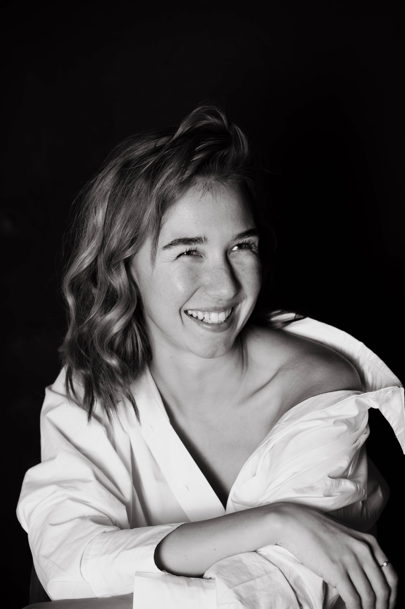

Discover Maria's professional profile and experience.
Opera singer | Mezzo-soprano

Moscow, Russia
Diploma in opera theatre.
Moscow, Russia
Participation in an international performance and dance programme. Performed in several productions, including at Garage Museum, the Solyanka Gallery and the Centre for Dramaturgy and Directing at the Vsevolod Meyerhold Centre in Moscow.
Ischia, Italy
Further training in opera singing, with a focus on vocal technique and development.
Capriccio in Black and White - Singer and stage dancer
Director: D. Asarov | Chamber Stage of the Bolshoi Theatre, MoscowCapriccio in Schwarz und Weiß - Sängerin und Bühnentänzerin
Regie: D. Asarow | Kammerbühne des Bolschoi-Theaters, Moskau
The Run - Singer and dancer
Director: O. Ivanova | Chamber Stage of the Bolshoi Theatre, MoscowThe Run - Sängerin und Tänzerin
Regie: O. Iwanowa | Kammerbühne des Bolschoi-Theaters, Moskau
Le nozze di Figaro (W.A. Mozart) - Role: Cherubino
GITIS Student Theatre, MoscowLe nozze di Figaro (W.A. Mozart) - Rolle: Cherubino
Studententheater der GITIS, Moskau
Eugene Onegin (P.I. Tchaikovsky) - Role: Olga
GITIS Student Theatre, MoscowEugen Onegin (P.I. Tschaikowski) - Rolle: Olga
Studententheater der GITIS, Moskau
The Diary of Anne Frank (Grigori Frid) - Monodrama
Director: M. Tikhonova | Khitrovka Theatre Centre, MoscowDas Tagebuch der Anne Frank (Grigori Frid) - Mono-Oper
Regie: M. Tichonowa | Theaterzentrum auf der Chitrowka, Moskau
Orphic Games - Singer / performer
Stanislavsky Electrotheatre, MoscowOrphische Spiele - Sängerin / Performerin
Elektrotheater Stanislawski, Moskau
Moroz - Red Nose - Singer and dancer
Director: M. Brusnikina | Praktika Theatre, MoscowMoroz - Krasny Nos - Sängerin und Tänzerin
Regie: M. Brusnikina | Theater Praktika, Moskau
The Lightning - Singer
Director: J. Kwiatkowski | Centre for Dramaturgy and Directing at the Vsevolod Meyerhold Centre, MoscowThe Lightning - Sängerin
Regie: J. Kwjatkowski | Zentrum für Dramaturgie und Regie des Wsewolod-Meyerhold-Zentrums, Moskau
It Is Not Too Late to Learn About Contemporary Music - Singer
Director: M. Brusnikina | Praktika Theatre, MoscowEs ist nicht zu spät, sich über moderne Musik zu informieren - Sängerin
Regie: M. Brusnikina | Theater Praktika, Moskau
Nostos - Singer in an opera production
Director: L. Zaitseva | Stanislavsky Electrotheatre, MoscowNostos - Sängerin in Opernproduktion
Regie: L. Saizewa | Elektrotheater Stanislawski, Moskau
Ratio - Ensemble singer
Director: E. Moroz | Zaryadye Hall, MoscowRatio - Ensemble-Sängerin
Regie: E. Moros | Zaryadye Hall, Moskau
Zerno - Singer
Stanislavsky Electrotheatre, MoscowZerno - Sängerin
Elektrotheater Stanislawski, Moskau
Concert work in Turkey - participation in various concert projects and programmes
Concert performances in Germany - performances featuring classical and jazz repertoire
Feel free to reach out for opportunities or collaborations.
Phone: +49 15754814839
Email: livadina.mariia@gmail.com